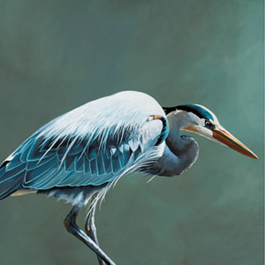

Птицы
Пти́цы (лат. Aves) — группа теплокровных яйцекладущих позвоночных животных, традиционно рассматриваемая в ранге отдельного класса[К 1]. Представляют собой хорошо обособленную на фоне остальных современных животных группу, одним из наиболее характерных признаков представителей которой является покров из перьев, предохраняющий тело от неблагоприятных изменений температуры и играющий важную роль при полёте[1]. Способность к полёту является главнейшей особенностью птиц (отсутствие её у некоторых видов — вторичное явление)[2]. Передние конечности приобрели форму крыльев. Птицы обладают особым строением органов дыхания и пищеварения, что тесно связано с их способностью летать. Ещё одним отличительным признаком является наличие клюва[1][2]. Многие виды птиц совершают регулярные длительные миграции из одного региона Земли в другой. Ещё большее количество ведёт кочевой образ жизни, постоянно перемещаясь на небольшие расстояния в пределах своих ареалов. Птицы являются социальными животными, которые общаются между собой при помощи визуальных и звуковых сигналов, и выполняют в ряде случаев общественные действия: коммунальное гнездование, совместная охота или защита от хищников[1]. Для большинства видов характерна моногамия. Как правило, яйца откладываются в гнездо и насиживаются одним или обоими членами пары. Большинство птиц длительное время ухаживают за своим потомством после его появления на свет. Птицы населяют все экосистемы земного шара, включая внутренние части Антарктиды[1]. Согласно данным Международного союза орнитологов, на август 2020 года науке известно 10 787 видов ныне живущих птиц (20 003 подвида), а также 158 видов, вымерших в современное историческое время[3]. Это делает птиц наиболее разнообразной группой надкласса четвероногих. На территории России отмечено 789 видов, включая 657 гнездящихся видов; 125 видов, гнездование которых не показано, и 7 вымерших видов[4]. Будучи наиболее многочисленной и широко распространенной группой высших позвоночных, а также вследствие особенностей своей биологии, птицы играют важную роль в природе и в жизни человека. Многие виды имеют важное экономическое значение. Птицеводство является одной из основных отраслей сельского хозяйства, производящей для человека мясо, яйца и жир, а также перья. Многие виды птиц содержатся человеком в качестве домашних животных. Вследствие деятельности человека многие птицы получили своё дальнейшее развитие, некоторые стали синантропами, но в то же время около 1200 видов в той или иной степени подвержены риску вымирания и охраняются национальными и международными законамивключая внутренние части Антарктиды[1]. Согласно данным а также вследствМеждународного союза орни
Читать далееПтицы
Пти́цы (лат. Aves) — группа теплокровных яйцекладущих позвоночных животных, традиционно рассматриваемая в ранге отдельного класса[К 1]. Представляют собой хорошо обособленную на фоне остальных современных животных группу, одним из наиболее характерных признаков представителей которой является покров из перьев, предохраняющий тело от неблагоприятных изменений температуры и играющий важную роль при полёте[1]. Способность к полёту является главнейшей особенностью птиц (отсутствие её у некоторых видов — вторичное явление)[2]. Передние конечности приобрели форму крыльев. Птицы обладают особым строением органов дыхания и пищеварения, что тесно связано с их способностью летать. Ещё одним отличительным признаком является наличие клюва[1][2]. Многие виды птиц совершают регулярные длительные миграции из одного региона Земли в другой. Ещё большее количество ведёт кочевой образ жизни, постоянно перемещаясь на небольшие расстояния в пределах своих ареалов. Птицы являются социальными животными, которые общаются между собой при помощи визуальных и звуковых сигналов, и выполняют в ряде случаев общественные действия: коммунальное гнездование, совместная охота или защита от хищников[1]. Для большинства видов характерна моногамия. Как правило, яйца откладываются в гнездо и насиживаются одним или обоими членами пары. Большинство птиц длительное время ухаживают за своим потомством после его появления на свет. Птицы населяют все экосистемы земного шара, включая внутренние части Антарктиды[1]. Согласно данным Международного союза орнитологов, на август 2020 года науке известно 10 787 видов ныне живущих птиц (20 003 подвида), а также 158 видов, вымерших в современное историческое время[3]. Это делает птиц наиболее разнообразной группой надкласса четвероногих. На территории России отмечено 789 видов, включая 657 гнездящихся видов; 125 видов, гнездование которых не показано, и 7 вымерших видов[4]. Будучи наиболее многочисленной и широко распространенной группой высших позвоночных, а также вследствие особенностей своей биологии, птицы играют важную роль в природе и в жизни человека. Многие виды имеют важное экономическое значение. Птицеводство является одной из основных отраслей сельского хозяйства, производящей для человека мясо, яйца и жир, а также перья. Многие виды птиц содержатся человеком в качестве домашних животных. Вследствие деятельности человека многие птицы получили своё дальнейшее развитие, некоторые стали синантропами, но в то же время около 1200 видов в той или иной степени подвержены риску вымирания и охраняются национальными и международными законами
Читать далееПтицы
Пти́цы (лат. Aves) — группа теплокровных яйцекладущих позвоночных животных, традиционно рассматриваемая в ранге отдельного класса[К 1]. Представляют собой хорошо обособленную на фоне остальных современных животных группу, одним из наиболее характерных признаков представителей которой является покров из перьев, предохраняющий тело от неблагоприятных изменений температуры и играющий важную роль при полёте[1]. Способность к полёту является главнейшей особенностью птиц (отсутствие её у некоторых видов — вторичное явление)[2]. Передние конечности приобрели форму крыльев. Птицы обладают особым строением органов дыхания и пищеварения, что тесно связано с их способностью летать. Ещё одним отличительным признаком является наличие клюва[1][2]. Многие виды птиц совершают регулярные длительные миграции из одного региона Земли в другой. Ещё большее количество ведёт кочевой образ жизни, постоянно перемещаясь на небольшие расстояния в пределах своих ареалов. Птицы являются социальными животными, которые общаются между собой при помощи визуальных и звуковых сигналов, и выполняют в ряде случаев общественные действия: коммунальное гнездование, совместная охота или защита от хищников[1]. Для большинства видов характерна моногамия. Как правило, яйца откладываются в гнездо и насиживаются одним или обоими членами пары. Большинство птиц длительное время ухаживают за своим потомством после его появления на свет. Птицы населяют все экосистемы земного шара, включая внутренние части Антарктиды[1]. Согласно данным Международного союза орнитологов, на август 2020 года науке известно 10 787 видов ныне живущих птиц (20 003 подвида), а также 158 видов, вымерших в современное историческое время[3]. Это делает птиц наиболее разнообразной группой надкласса четвероногих. На территории России отмечено 789 видов, включая 657 гнездящихся видов; 125 видов, гнездование которых не показано, и 7 вымерших видов[4]. Будучи наиболее многочисленной и широко распространенной группой высших позвоночных, а также вследствие особенностей своей биологии, птицы играют важную роль в природе и в жизни человека. Многие виды имеют важное экономическое значение. Птицеводство является одной из основных отраслей сельского хозяйства, производящей для человека мясо, яйца и жир, а также перья. Многие виды птиц содержатся человеком в качестве домашних животных. Вследствие деятельности человека многие птицы получили своё дальнейшее развитие, некоторые стали синантропами, но в то же время около 1200 видов в той или иной степени подвержены риску вымирания и охраняются национальными и международными законами
Читать далее